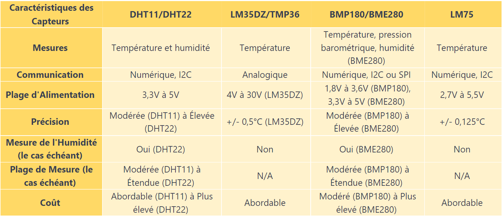

Dans le cadre du projet HeatSmart Home, le choix des capteurs de température revêt une importance cruciale pour garantir une régulation thermique optimale et une utilisation énergétique efficiente. Ce texte explore les caractéristiques et les performances de divers capteurs, mettant en évidence leurs avantages et inconvénients respectifs. De la mesure de la température et de l'humidité aux capteurs barométriques avancés, cette comparaison offre un aperçu approfondi des options disponibles. L'objectif est de guider vers le choix optimal de capteurs pour maximiser l'efficacité énergétique du projet HeatSmart Home.
Le DHT11 et le DHT22 sont des capteurs numériques de température qui évaluent à la fois la
température et l'humidité relative. Dotés d'une puce interne chargée de la conversion
analogique-numérique, ces
capteurs transmettent un signal numérique incluant les données de température et d'humidité.
Leur conception simplifiée les rend particulièrement conviviaux pour une intégration aisée avec
divers microcontrôleurs, dont l'Arduino. Le DHT22 se distingue par une précision accrue ainsi
qu'une plage de mesure de température et d'humidité plus étendue. Il est par conséquent plus
onéreux que le
DHT11.
Le LM35DZ et le TMP36 sont des capteurs des température linéaire préalablement calibrés en degrés Celsius. Sa sortie analogique est directement proportionnelle à la température en Celsius. Le LM35DZ supporte une plage d'alimentation beaucoup plus vaste (4 à 30 V) et offre une plus grande précision (+/- 0,5°C).
Malgré leur principale fonction de capteur de pression barométrique, le BMP180 et le BME280 ont
également la
capacité de mesurer la température. Cette fonctionnalité s'avère utile lors
de l'intégration dans des projets de stations météorologiques. Le BME280 propose en supplément
une mesure de l'humidité, une plage d'alimentation en 3,3V ou 5V ainsi qu'une plus grande
précision. Il est par conséquent plus onéreux que le BMP180.
Le capteur LM75 offre une communication via le bus I2C et une grande compacité. Il offre surtout une grande précision de mesure (+/- 0.125°C), pour un coût assez faible.
Nous arrivons donc au tableau comparatif suivant :

Dans le cadre du projet HeatSmart Home, la précision des capteurs s'avère être un critère essentiel
pour garantir un contrôle thermique optimal. Afin d'éviter tout compromis, nous avons écarté les
options d'entrée de gamme pour nous concentrer sur des capteurs offrant des performances plus
avancées.
La mesure de l'humidité a été identifiée comme un élément clé dans notre évaluation des besoins en
chauffage du lieu. C'est pourquoi le choix d'un capteur intégrant cette fonctionnalité a été
privilégié. Dans cette optique, le DHT22 s'est imposé comme un choix judicieux, offrant une
précision accrue tout en facilitant la mise en œuvre rapide de prototypes.
En parallèle, la considération de la pression barométrique comme un paramètre potentiellement
influent sur notre projet a orienté notre choix vers le BME280. Cette option offre une gamme étendue
de mesures, nous permettant de prendre des décisions éclairées sur la gestion thermique du HeatSmart
Home à mesure que le projet évolue.
Ainsi, le DHT22 et le BME280 se révèlent être des choix stratégiques, alignés sur nos besoins
spécifiques et offrant une flexibilité précieuse pour l'avancement du projet HeatSmart Home.
Hardware